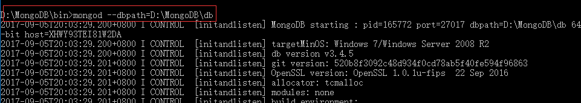
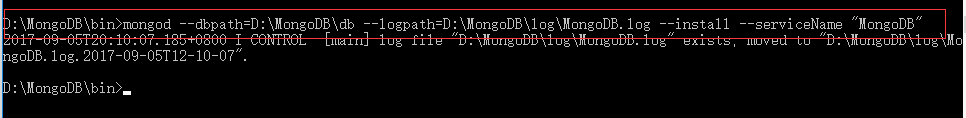

mongoDB服务器端安装和启动步骤：
下载mongoDB安装包：http://www.mongodb.org/downloads
1) 在磁盘创建文件夹
d:\mongodb
d:\mongodb\db 数据库目录
d:\mongodb\log 日志存放目录
d:\mongodb\log\mongoDB.log
2) 解压mongoDB安装包，并将解压后的bin文件夹拷贝到mongodb中
3) 启动mongoDB服务
在bin目录中有许多命令，启动数据库只需要两个命令mongod和mongo：
mongod：是mongoDB数据库进程本身
mongo：是命令行shell客户端
启动mongoDB进程：D:\MongoDB\bin>mongod --dbpath=D:\MongoDB\db

执行到这里，mongoDB服务器已经启动了，接下来就可以在客户端操作数据库了。但是，当mongod.exe启动程序被关闭后，mongoDB客户端就无法连接数据库。
为了避免每次都要手动启动数据库，可以将mongDB安装为windows服务，让该服务随windows启动而开启，这样，我们在使用mongoDB的时候直接连接数据库就可以了，省去了手动开启服务的繁琐。将mongoDB安装为windows服务并开启的命令：

备注： 由于我已经启动过log ，所以显示我的MongoDB.log 是已经存在的，如果第一次启动的话，是会自动生成一个MongoDB.log 文件的,用于存放日志。
开启服务：
总结：mongoDB无需安装，只需要创造服务器的启动环境即可：需要的是bin文件夹(存放的是mongoDB的一些命令)、指定数据库的位置和日志位置、建立一个日志文件。有了这些，mongoDB服务器端就可以启动了。
mongoDB服务器启动后，就可以通过mongoDB客户端操作数据库了。mongoDB客户端包括：
1. shell控制台
2. java、php等驱动程序
3. mongoVUE是一个可视化工具，相当于我们熟悉的plSql，不过也可以执行对数据库的操作
通过shell客户端，我们可以很方便的练习mongoDB的curd操作，不过，在开发中，还是通过相应的驱动程序由编程语言来操作。